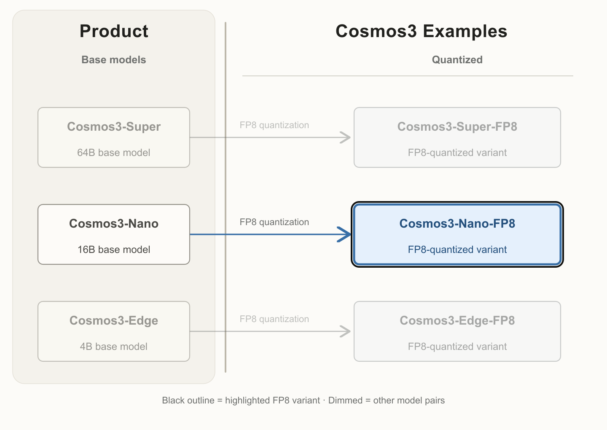

Cosmos 3: Omnimodal World Models for Physical AI
Cosmos3 | Cosmos3 Examples | Code | White Paper | Website
NVIDIA Cosmos™ is a world foundation model platform designed to accelerate the development of Physical AI by enabling machines to understand, simulate, and interact with the physical world across robotics, autonomous driving, and smart space environments, including industrial and factory-scale applications.
Model Overview: Cosmos3-Nano-FP8

The highlighted checkpoint, Cosmos3-Nano-FP8, is an FP8-quantized version of the Cosmos3-Nano base model.
Description
Cosmos3-Nano-FP8 is an FP8-quantized variant of Cosmos3-Nano. It retains the base model architecture and intended applications, with FP8 quantization applied to selected model components.
Cosmos3 is a collection of Omnimodal world models capable of generating dynamic, high-quality video, image, audio, and action commands from combinations of text, image, video, and action trajectory inputs. It serves as a foundational building block for a broad range of Physical AI applications and research spanning world understanding, world generation, simulation, and embodied policy learning.
This model is ready for commercial and non-commercial use.
Model Developer: NVIDIA
Model Versions
- Cosmos3-Nano-FP8:
- Given multimodal inputs including text, images, video, audio, and action trajectories, generate coherent text, images, video, audio, and action outputs for multimodal understanding, world simulation, future prediction, action reasoning, and Physical AI applications.
License
This model is released under the OpenMDW1.1
Deployment Geography
Global
Use Case
Physical AI: Encompassing robotics, autonomous vehicles (AV), and smart space environments, including industrial and factory-scale applications.
Release Date
Hugging Face 11/09/2026 via https://huggingface.co/collections/nvidia/cosmos3 GitHub 11/09/2026 via https://github.com/nvidia/cosmos
Model Architecture
Architecture Type: Transformer
Network Architecture: Mixture-of-Transformers (MoT)
Cosmos3 is an Omni-modal foundation model built on a Mixture-of-Transformers (MoT) architecture consisting of two complementary transformer towers: an autoregressive transformer for discrete token generation and a diffusion transformer for continuous multimodal generation. During inference, text is generated through standard next-token autoregressive decoding, while non-text modalities, such as images, video, audio, and actions, are synthesized through iterative denoising. This unified architecture enables Cosmos3 to model heterogeneous modalities within a single framework while preserving generation mechanisms best suited to each modality.
This model was developed based on: Cosmos Framework
Number of trainable model parameters:
- Cosmos3-Nano-FP8: 16B
Input/Output Specifications
- Generator Input
- Input Type(s): Text, Image, Video (with audio or without audio), Action Trajectory
- Input Format(s):
- Text: String
- Image: jpg, png, jpeg, webp
- Video (with or without audio): mp4
- Action: json (1D list)
- Input Parameters:
- Text: One-dimensional (1D)
- Image: Two-dimensional (2D)
- Video: Three-dimensional (3D)
- Audio: One-dimensional (1D)
- Action trajectory: One-dimensional (1D)
- Other Properties Related to Input:
- For video inputs, we accept various resolutions, including 720p, 480p, and 256p.
- When using input video with audio muxed into the video MP4 file, the audio should have 2 channels (stereo) and a 48 kHz sample rate.
- Image and video inputs are RGB color (8 bits per channel, sRGB color space); grayscale inputs are not supported.
- Action input is a per-frame sequence of robot/agent state or control values (e.g., joint positions, gripper state, camera pose). The full input is a 2D array shaped (T, D), where T is the number of frames and D is the embodiment-specific dimensionality listed below.
- Input action is only supported for compatible embodiments, including general camera motion (9D), autonomous vehicle (9D), egocentric motion (57D), single Franka Panda arm with RobotiQ gripper (10D), dual Franka Panda arm with RobotiQ gripper (20D), Agibot (29D), UR (10D), Google robot (10D), WidowX 250 (10D), UMI (9D).
- Input Size and Length limits:
- Text: 4096 tokens
- Image: 256p, 480p, and 720p resolution at one of these aspect ratios (16:9, 4:3, 1:1, 3:4, 9:16)
- Video: 256p, 480p, and 720p resolution at one of these aspect ratios (16:9, 4:3, 1:1, 3:4, 9:16). Max number of frames = 5.
- Audio: Max 0.5 second
- Action: 16 – 400 video frames
- Generator Output
- Output Type(s): Image, video, audio, action, text
- Output Format(s):
- Image: JPG
- Video: MP4
- Audio: Advanced Audio Coding (AAC) stream (muxed within the MP4)
- Action: 1D list (.json)
- Text: string
- Output Parameters:
- Image: Two-dimensional (2D)
- Video: Three-dimensional (3D)
- Audio: One-dimensional (1D)
- Action: One-dimensional (1D)
- Text: One-dimensional (1D)
- Other Properties Related to Output:
- The generated video is an MP4 file, with the resolution, frame rate, and duration specified in the input. The generated audio is encoded in AAC format, muxed into the video MP4 file with 2 channels (stereo) and a 48 kHz sample rate.
- Video generation supports durations from 5 to 400 frames, with 189 frames as the default generation duration.
- The generated action is only supported for compatible embodiments, including general camera motion (9D), autonomous vehicle (9D), egocentric motion (57D), single Franka Panda arm with RobotiQ gripper (10D), dual Franka Panda arm with RobotiQ gripper (20D), Agibot (29D), UR (10D), Google robot (10D), WidowX 250 (10D), UMI (9D).
- Audio: 48 kHz stereo AAC stream muxed into video mp4
- Video: mp4 at the FPS specified in input
- Image: JPEG
- Reasoner Input
- Input Type(s): Text, Text+Image, Text+Video
- Input Format(s):
- Text: String
- Image: jpg, png, jpeg, webp
- Video: mp4
- Input Parameters:
- Text: One-dimensional (1D)
- Image: Two-dimensional (2D)
- Video: Three-dimensional (3D)
- Other Properties Related to Input:
- Video inputs are recommended at a frame rate of 4 fps.
- Long-context inputs supported up to 256K tokens.
- Input Size and Length limits:
- Text: Up to 256K tokens (context window).
- Image: Standard input image formats; passed as file or URL.
- Video: mp4 at the recommended 4 fps.
- Reasoner Output
- Output Type(s): Text
- Output Format(s):
- Text: string
- Output Parameters:
- Text: One-dimensional (1D)
- Other Properties Related to Output:
- Default
max_tokens=4096+is recommended for reasoning outputs; longer outputs may be requested. - Reasoning outputs may include structured chain-of-thought, 2D/3D point localization, and bounding-box coordinates for vision-based tasks.
The video content visualizes the input text description as a short animated scene, capturing key elements within the specified time constraints.
Our AI models are designed and/or optimized to run on NVIDIA GPU-accelerated systems. By leveraging NVIDIA's hardware (e.g., GPU cores) and software frameworks (e.g., CUDA libraries), the model achieves faster training and inference times compared to CPU-only solutions.
Software Integration
Runtime Engine(s):
Supported Hardware Microarchitecture Compatibility:
- NVIDIA Ampere
- NVIDIA Blackwell
- NVIDIA Hopper
Operating System(s):
- Linux
Precision: This repository provides the FP8-quantized Cosmos3-Nano checkpoint, including its quantization configuration and ModelOpt state. Components excluded from quantization retain their original precision.
The integration of foundation and fine-tuned models into AI systems requires additional testing using use-case-specific data to ensure safe and effective deployment. Following the V-model methodology, iterative testing and validation at both unit and system levels are essential to mitigate risks, meet technical and functional requirements, and ensure compliance with safety and ethical standards before deployment.
Training, Testing, and Evaluation Datasets
Dataset Overview
- Total Size: 1.3B data points
- Total Number of Datasets: 393 dataset entries
- Dataset partition: Training [100%], Testing [N/A — evaluation benchmarks used separately], Validation [N/A — evaluation benchmarks used separately]
- Time period for training data collection: 2024–2026
- Time period for testing data collection: N/A (standard public benchmarks)
- Time period for validation data collection: N/A (standard public benchmarks)
Raw data from internal and external sources is transformed into training-ready data through multiple stages of curation, filtering, and quality review. Data acquisition spans diverse multimodal sources — robotics, autonomous driving, industrial environments, indoor and outdoor scenes, varied lighting and weather conditions, camera viewpoints, object categories, and human activities — to broaden coverage across Physical AI operating environments. Automated filtering pipelines remove corrupted, duplicate, low-quality, and restricted content. Metadata analysis, heuristic rules, and model-assisted classifiers are applied during preprocessing to flag anomalous distributions and low-diversity subsets. Human review supplements automated filtering for selected datasets, benchmark construction, and targeted quality analysis. Datasets are balanced across modalities and task categories — visual reasoning, text-to-image, text-to-video, image-to-video, audio generation, video transfer, action-conditioned generation, and action command generation — to reduce overrepresentation of narrow domains. Synthetic and simulation-based augmentation supplements coverage of rare physical interactions and edge-case scenarios. Deduplication and provenance tracking are applied across the corpus. The resulting processed data is converted into model-ready tokenized or encoded representations through modality-specific preprocessors before training begins.
Training datasets passed through multiple layers of automated and manual safeguards designed to reduce the presence of harmful or policy-violating content across categories including weapons and weapons-related instructional content, criminal planning, child sexual abuse material (CSAM), non-consensual intimate imagery (NCII), sexual content involving minors, harassment, hate speech, profanity, threats and incitement to violence, self-harm or suicide-related content, and graphic violence. Data sources are reviewed for licensing compatibility, provenance, and alignment with internal data governance and safety policies before admission into training corpora. Automated filtering pipelines combine multiple detection strategies: hash-matching against known CSAM and NCII reference databases; classifier-based moderation models trained for explicit sexual content, hate speech, violence, weapons imagery, and other restricted categories; keyword and regex-based screening for criminal-planning, threats, and self-harm phrases in text data; metadata and provenance heuristics for source-level risk signals; and embedding-based anomaly detection to surface samples that fall outside expected distributions. Human review and targeted audits supplement automated filtering for selected datasets, benchmark construction, and safety-sensitive evaluation. For multimodal Physical AI data (robotics, autonomous driving, industrial scenes), additional filtering targets invalid action trajectories, physically implausible interactions, and unsafe control sequences. Synthetic and simulation-generated data are evaluated through internal validation before inclusion. Benchmark evaluations and red-team testing are applied post-training to surface remaining safety gaps across world generation, reasoning, audio, and action tasks. No large-scale data-filtering process can guarantee complete removal of all harmful content; residual risks may remain, particularly in rare edge cases or open-world deployment settings. Ongoing monitoring and dataset review continue post-release.
For more information about the datasets used to train this model, please see the Public Summary of Training Content.
Data Modality and Training Data Size
| Modality | Reasoning Data Sample Count | Generation Data Sample Count |
|---|---|---|
| Text | 22M | Not Applicable |
| Image | 19M | 767M |
| Video | 1M | 348M |
| Audio | Not Applicable | 139M |
| Action | Not Applicable | 7M |
Data Collection Method by dataset
- Hybrid: Automatic/Sensors, Synthetic, Automated
Labeling Method by dataset
- Hybrid: Manually-Labelled, Automated
Properties: The training, testing, and evaluation datasets consist of diverse multimodal video, image, audio, action, synthetic, and sensor-conditioned data sourced from NVIDIA-owned data and publicly available, commercially permissive datasets. These datasets are curated to exclude known restricted content and to support building an Omni model that learns to generate and reason about dynamic physical environments across world reasoning and generation tasks.
Public Datasets
| Dataset | Samples |
|---|---|
| OpenImage | 1.2M |
| Coyo700M | 100M |
| YouTube Video | 340M |
| UMI | 4.5M |
Private Datasets
| Dataset | Samples |
|---|---|
| Egocentric | 7M |
| Nexar | 0.6M |
| AgiBot | 0.2M |
| HOI | 0.3M |
Synthetic Datasets
| Dataset | Samples |
|---|---|
| synthetic images generated using HiDream-I1 | 15M |
| synthetic images generated using Qwen-Image-2512 | 14M |
| synthetic captions generated using Qwen3-VL | 1115M |
Evaluation Datasets
Data Collection Method by dataset
- Hybrid: Automatic/Sensors, Synthetic, Automated
Labeling Method by dataset
- Hybrid: Manually-Labelled, Automated
Properties: The training, testing, and evaluation datasets consist of diverse multimodal video, image, audio, action, synthetic, and sensor-conditioned data sourced from NVIDIA-owned data and publicly available, commercially permissive datasets. These datasets are curated to exclude known restricted content and to support building an Omni model that learns to generate and reason about dynamic physical environments across world reasoning and generation tasks.
Quality Benchmark
Reasoner Benchmarks
We compare Cosmos3-Nano-FP8 with its BF16 counterpart across general reasoning, robotics, smart infrastructure, and driving benchmarks. Each domain score is the unweighted mean of the benchmark scores listed below, using the same benchmark set for BF16 and FP8.
| Domain | BF16 | FP8 |
|---|---|---|
| General ↑ | 68.16 | 68.25 |
| Robotics ↑ | 52.07 | 52.54 |
| Smart Infrastructure ↑ | 63.24 | 62.70 |
| Driving ↑ | 71.57 | 72.50 |
- General (18 benchmarks): MMBench_DEV_EN_V11, RealWorldQA, CVBench, VideoPhy2, CausalVQA_4fps, MVPBench, CountBenchQA, AI2D_TEST, DocVQA_VAL, InfoVQA_VAL, OCRBench_v2, LogicVista, MMMU_Pro_10c, MVBench_2fps64f, BlinkSpatial, BlinkDepth, HallusionBench, IFBench
- Robotics (10 benchmarks): CosmosReason, RefSpatial, VSI-Bench_32frame, SparBench, MMSIBench_wo_circular, MMSIVideoBench_32frame, HealthSurgiBench, CosmosERQA, RoboSpatialHome, Where2Place
- Smart Infrastructure (8 benchmarks): VANTAGE_2DGrounding, VANTAGE_Astro2D, VANTAGE_2DPointing, VANTAGE_DVC, VANTAGE_EventVerification, VANTAGE_SOT, VANTAGE_Temporal, VANTAGE_VQA
- Driving (3 benchmarks): LingoQA, AVSpecialCollisionBench, AVSpecialStopBehaviorBench
Generator Benchmarks
We compare Cosmos3-Nano-FP8 with its BF16 counterpart. PAIBench-G evaluates text-to-video and image-to-video generation. RBench assesses task correctness, physical plausibility, and visual fidelity in robotics videos. SoundBench measures audiovisual quality. PhysicsIQ compares video continuations with recorded physical outcomes. We report control-following results on PAIBench-C with edge, blur, depth, and segmentation inputs. On the internal UVA benchmark, we report video PSNR for forward dynamics (FDM) and joint video-and-action prediction (WAM).
| Benchmark | BF16 | FP8 |
|---|---|---|
| PAIBench-G I2V ↑ | 82.70 | 82.60 |
| PAIBench-G T2V ↑ | 79.40 | 79.40 |
| RBench ↑ | 0.58 | 0.57 |
| SoundBench ↑ | 7.34 | 7.09 |
| PhysicsIQ V2V ↑ | 50.20 | 52.01 |
| PAIBench-C Edge F1 ↑ | 0.49 | 0.48 |
| PAIBench-C Blur SSIM ↑ | 0.91 | 0.91 |
| PAIBench-C Depth si-RMSE ↓ | 0.62 | 0.64 |
| PAIBench-C Seg. mIoU ↑ | 0.72 | 0.72 |
| UVA FDM PSNR ↑ | 21.05 | 21.89 |
| UVA WAM PSNR ↑ | 12.01 | 19.25 |
For quality benchmarks, BF16 results were obtained using PyTorch, and FP8 results were obtained using vLLM-Omni.
Performance Benchmark
Cosmos3-Nano-FP8
All results use one GPU. Generator inference uses vLLM-Omni, Reasoner inference uses vLLM, and Action Policy inference uses PyTorch. Results vary with the workload, hardware, and serving configuration.
| GPU (1 GPU) | Generator — 480p (frames/s) ↑ | Generator — 720p (frames/s) ↑ | Reasoner — time to first token (ms) ↓ | Reasoner — output token throughput (tokens/s) ↑ | Action Policy — 480p (actions/s, 32-action chunks) ↑ |
|---|---|---|---|---|---|
| GB300 | 10.06 | 2.80 | 91.8 | 241.65 | 37.47* |
| B300 | 8.69 | 2.38 | 108.5 | 240.16 | 37.47 |
| B200 | 8.11 | 2.24 | 137.8 | 221.72 | 52.36 |
| H100 | 3.20 | 1.01 | 129.5 | 173.01 | 38.29 |
| H200 | 3.34 | 1.00 | 128.3 | 202.05 | 38.97 |
| H20 | 0.91 | 0.24 | 242.0 | 148.21 | 11.17 |
| DGX Spark | — | — | 336.1 | 22.62 | — |
| DGX Station | — | — | 85.4 | 255.99 | — |
| RTX PRO 6000 Blackwell Server Edition | 2.34 | 0.61 | 150.2 | 112.90 | 24.90 |
- Generator: Image-to-video (i2v) only, at 480p and 720p. Throughput is calculated as 189 frames ÷ average end-to-end generation time in seconds, following the existing model-card benchmark convention. This measures inference throughput for a generated sequence.
- Reasoner: 50 input tokens, 100 output tokens, workload FPS 1, concurrency 1, and 50 requests. Both columns use the same workload. Output token throughput is the reported benchmark metric.
- Action Policy: Policy Robot (DROID), 480p, with 32-action chunks. Action throughput is calculated as 32 ÷ average generation time in seconds.
- **GB300 Action Policy estimate (*):** Uses the single-GPU B300 result, assuming similar performance on GB300. This value has not been measured on GB300.
- Hardware: H100 results use the 80GB HBM3 configuration; H200 results use the 141GB HBM3 configuration. RTX PRO 6000 results use the Blackwell Server Edition.
- Missing results: A dash (—) indicates that benchmark results are unavailable. This applies to Generator and Action Policy measurements for DGX Spark and DGX Station.
Usage
- See Cosmos for details.
Prompt upsampling
For optimal quality, text prompts should be upsampled into a specific JSON structure. Description and code can be found here.
For example, for text-to-video upsampling using Opus-4.6:
bashgit clone https://github.com/NVIDIA/cosmos-framework.git packages/cosmos-framework pip install -e packages/cosmos-framework export PROMPT_UPSAMPLER_ENDPOINT_URL="https://api.anthropic.com/v1/" export PROMPT_UPSAMPLER_MODEL_NAME="claude-opus-4-6" export PROMPT_UPSAMPLER_API_TOKEN="<you_token>" python -m cosmos_framework.inference.prompt_upsampling \ --input assets/example_t2v_prompt_short.txt \ --output /tmp/upsampled_t2v_opus/ \ --mode text2video \ --endpoint-url "${PROMPT_UPSAMPLER_ENDPOINT_URL}" \ --model "${PROMPT_UPSAMPLER_MODEL_NAME}" \ --api-token "${PROMPT_UPSAMPLER_API_TOKEN}" \ --resolution 720 \ --aspect-ratio "16,9"
The JSON-upsampled version of assets/example_t2v_prompt_short.txt is saved in assets/example_t2v_prompt.json for convenience, and is used for the video generation examples below.
vLLM-Omni
Container
codedocker pull vllm/vllm-omni:cosmos3
General Invocation
You can use the release-tested vllm-omni package for deploying an OpenAI-compatible API inference endpoint. The recommended vLLM-Omni serving configuration for nvidia/Cosmos3-Nano-FP8 on B200 is:
bashVLLM_OMNI_USE_QUACK_FP8=0 \ vllm serve nvidia/Cosmos3-Nano-FP8 \ --omni \ --host 0.0.0.0 \ --port 8000 \ --init-timeout 1800
To speed up inference with additional GPUs, enable context parallelism with --ulysses-degree or switch to tensor parallelism with --tensor-parallel-size. Setting --enable-layerwise-offload can help reduce memory usage on GPUs with less available memory.
Examples
Download example prompts
The example inputs (assets/) live in this model repo. Download just this folder with the Hugging Face CLI:
bashpip install -U "huggingface_hub<2" hf download nvidia/Cosmos3-Nano-FP8 assets/ --local-dir Cosmos3-Nano-FP8 cd Cosmos3-Nano-FP8
Run all commands below from the downloaded repo root.
---
Image to video generation
pythonimport json import mimetypes from pathlib import Path import requests # 1. Read JSON-upsampled prompt and negative prompt json_prompt = json.load(open("assets/example_i2v_prompt.json")) negative_prompt = json.load(open("assets/negative_prompt.json")) # 2. Build and send the multipart API request url = "http://localhost:8000/v1/videos/sync" image_path = Path("assets/example_i2v_input.jpg") mime_type = mimetypes.guess_type(image_path)[0] or "image/png" data = { "prompt": json.dumps(json_prompt), "negative_prompt": json.dumps(negative_prompt), "size": "1280x720", "num_frames": "189", "fps": "24", "num_inference_steps": "35", "guidance_scale": "6.0", "max_sequence_length": "4096", "flow_shift": "10.0", "extra_params": json.dumps( { "use_resolution_template": False, "use_duration_template": False, "guardrails": True, } ), "seed": "17", } with image_path.open("rb") as image_file: files = { "input_reference": (image_path.name, image_file, mime_type), } print("Sending request to server...") response = requests.post( url, data=data, files=files, headers={"Accept": "video/mp4"}, ) response.raise_for_status() # 3. Save the generated video output_path = Path("/tmp/cosmos3_nano_i2v.mp4") output_path.write_bytes(response.content) print(f"Saved video to {output_path}")
Example output:
---
Text to video generation
pythonimport json from pathlib import Path import requests # 1. Read JSON-upsampled prompt and negative prompt json_prompt = json.load(open("assets/example_t2v_prompt.json")) negative_prompt = json.load(open("assets/negative_prompt.json")) # 2. Build your API payload data = { "prompt": json.dumps(json_prompt), "negative_prompt": json.dumps(negative_prompt), "size": "1280x720", "num_frames": "189", "fps": "24", "num_inference_steps": "35", "guidance_scale": "6.0", "max_sequence_length": "4096", "flow_shift": "10.0", "extra_params": json.dumps( { "use_resolution_template": False, "use_duration_template": False, "guardrails": True, } ), "seed": "123", } # 3. Send the POST request url = "http://localhost:8000/v1/videos/sync" print("Sending request to server...") response = requests.post( url, data=data, headers={"Accept": "video/mp4"}, ) response.raise_for_status() # 4. Save the generated video output_path = Path("/tmp/cosmos3_nano_t2v.mp4") output_path.write_bytes(response.content) print(f"Saved video to {output_path}")
Example output:
---
Image to Video + Audio generation
pythonimport json import mimetypes from pathlib import Path import requests # 1. Read JSON-upsampled prompt and negative prompt json_prompt = json.load(open("assets/example_i2v_prompt.json")) negative_prompt = json.load(open("assets/negative_prompt.json")) # 2. Build and send the multipart API request url = "http://localhost:8000/v1/videos/sync" image_path = Path("assets/example_i2v_input.jpg") mime_type = mimetypes.guess_type(image_path)[0] or "image/png" data = { "prompt": json.dumps(json_prompt), "negative_prompt": json.dumps(negative_prompt), "size": "1280x720", "num_frames": "189", "fps": "24", "num_inference_steps": "35", "guidance_scale": "6.0", "max_sequence_length": "4096", "generate_sound": "true", "sound_duration": "7.875", "flow_shift": "10.0", "extra_params": json.dumps( { "use_resolution_template": False, "use_duration_template": False, "guardrails": True, } ), "seed": "0", } with image_path.open("rb") as image_file: files = { "input_reference": (image_path.name, image_file, mime_type), } print("Sending request to server...") response = requests.post( url, data=data, files=files, headers={"Accept": "video/mp4"}, ) response.raise_for_status() # 3. Save the generated video output_path = Path("/tmp/cosmos3_nano_i2vs.mp4") output_path.write_bytes(response.content) print(f"Saved video to {output_path}")
Example output:
---
Text to Video + Audio generation
pythonimport json from pathlib import Path import requests # 1. Read JSON-upsampled prompt and negative prompt json_prompt = json.load(open("assets/example_t2vs_prompt.json")) negative_prompt = json.load(open("assets/negative_prompt.json")) # 2. Build your API payload data = { "prompt": json.dumps(json_prompt), "negative_prompt": json.dumps(negative_prompt), "size": "1280x720", "num_frames": "189", "fps": "24", "num_inference_steps": "35", "guidance_scale": "6.0", "max_sequence_length": "4096", "generate_sound": "true", "sound_duration": "7.875", "flow_shift": "10.0", "extra_params": json.dumps( { "use_resolution_template": False, "use_duration_template": False, "guardrails": True, } ), "seed": "42", } # 3. Send the POST request url = "http://localhost:8000/v1/videos/sync" print("Sending request to server...") response = requests.post( url, data=data, headers={"Accept": "video/mp4"}, ) response.raise_for_status() # 4. Save the generated video output_path = Path("/tmp/cosmos3_nano_t2vs.mp4") output_path.write_bytes(response.content) print(f"Saved video to {output_path}")
Example output:
---
Action generation
The forward-dynamics example uses AgiBotWorld-Beta robotics action trajectories, and the inverse-dynamics examples use autonomous-vehicle (AV) action trajectories. Source files:
- Forward dynamics first frame:
assets/example_action_fd_agibotworld_first_frame.png - Forward dynamics action chunks:
assets/example_action_fd_agibotworld_action_chunks.json - Forward dynamics output video:
assets/example_action_fd_agibotworld_4chunk_output.mp4 - Inverse dynamics source videos:
assets/example_action_id_av_0_input.mp4,assets/example_action_id_av_1_input.mp4 - Inverse dynamics predicted actions:
assets/example_action_id_av_0_output.json,assets/example_action_id_av_1_output.json
Action forward dynamics
The example below performs a 4-chunk AgiBotWorld-Beta robotics rollout with the vLLM-Omni /v1/videos/sync inference endpoint. Each request sends one conditioning frame through input_reference and one 16-step normalized 29-D action chunk through extra_params["action"]. The request also sets the top-level size field to the input image resolution, so vLLM-Omni returns each chunk at the same resolution as the conditioning image without reflection padding. The stitched output drops each chunk's conditioning frame, producing 64 generated frames. The script extracts the last generated frame from each chunk and uses it as the next chunk's conditioning frame.
pythonimport json import mimetypes from pathlib import Path import imageio.v3 as iio import numpy as np import requests from PIL import Image url = "http://localhost:8000/v1/videos/sync" first_frame_path = Path("assets/example_action_fd_agibotworld_first_frame.png") action_spec = json.loads(Path("assets/example_action_fd_agibotworld_action_chunks.json").read_text()) action_chunks = action_spec["action_chunks"] prompt = action_spec.get("prompt", "Pickup items in the supermarket") fps = int(action_spec.get("fps", 10)) action_chunk_size = int(action_spec.get("action_chunk_size", 16)) current_frame_path = first_frame_path input_width, input_height = Image.open(first_frame_path).size chunk_video_paths = [] stitch_frames = [] for chunk_idx, action_chunk in enumerate(action_chunks): mime_type = mimetypes.guess_type(current_frame_path)[0] or "image/png" extra_params = { "action_mode": "forward_dynamics", "domain_name": action_spec.get("domain_name", "agibotworld"), "action_chunk_size": action_chunk_size, "image_size": action_spec.get("image_size", 480), "view_point": action_spec.get("view_point", "concat_view"), "action": action_chunk, "guardrails": True, } data = { "prompt": prompt, "num_frames": str(action_chunk_size + 1), # conditioning frame + generated frames "fps": str(fps), "size": f"{input_width}x{input_height}", # return chunks at input resolution "num_inference_steps": "30", "guidance_scale": "1.0", "flow_shift": "10.0", "seed": "0", "extra_params": json.dumps(extra_params), } with current_frame_path.open("rb") as image_file: files = {"input_reference": (current_frame_path.name, image_file, mime_type)} print(f"Sending action FD chunk {chunk_idx} to vLLM-Omni...") response = requests.post( url, data=data, files=files, headers={"Accept": "video/mp4"}, timeout=600, ) response.raise_for_status() chunk_video_path = Path(f"/tmp/cosmos3_nano_action_fd_chunk_{chunk_idx:02d}.mp4") chunk_video_path.write_bytes(response.content) chunk_video_paths.append(chunk_video_path) # The returned chunk contains the conditioning frame followed by generated frames. # Drop the conditioning frame when stitching the generated-only rollout. frames = iio.imread(chunk_video_path) stitch_frames.extend(frames[1:]) # Autoregressive conditioning: use the final generated frame from this chunk # as the input image for the next vLLM-Omni request. if chunk_idx + 1 < len(action_chunks): current_frame_path = Path(f"/tmp/cosmos3_nano_action_fd_ar_frame_{chunk_idx + 1:02d}.png") iio.imwrite(current_frame_path, frames[-1]) stitched_path = Path("/tmp/cosmos3_nano_action_fd_agibotworld_4chunk.mp4") iio.imwrite(stitched_path, np.asarray(stitch_frames), fps=fps) print("Generated chunk videos:", chunk_video_paths) print("Saved stitched rollout:", stitched_path) print("stitched resolution:", f"{input_width}x{input_height}")
Example output:
Action inverse dynamics
pythonimport json import time from pathlib import Path import requests base_url = "http://localhost:8000" input_videos = { "av_inverse_0": Path("assets/example_action_id_av_0_input.mp4"), "av_inverse_1": Path("assets/example_action_id_av_1_input.mp4"), } for name, video_path in input_videos.items(): extra_params = { "action_mode": "inverse_dynamics", "domain_name": "av", "action_chunk_size": 60, "image_size": 480, "view_point": "ego_view", "raw_action_dim": 9, "guardrails": True, } data = { "prompt": "You are an autonomous vehicle planning system.", "num_frames": "61", "fps": "10", "num_inference_steps": "30", "guidance_scale": "1.0", "flow_shift": "10.0", "seed": "0", "extra_params": json.dumps(extra_params), } with video_path.open("rb") as video_file: files = { "input_reference": (video_path.name, video_file, "video/mp4"), } print(f"Submitting {name} request to server...") response = requests.post(f"{base_url}/v1/videos", data=data, files=files) response.raise_for_status() initial = response.json() while True: response = requests.get(f"{base_url}/v1/videos/{initial['id']}", timeout=30) response.raise_for_status() final = response.json() print(initial["id"], final.get("status"), f"{final.get('progress', 0)}%") if final.get("status") == "completed": break if final.get("status") in {"failed", "cancelled"}: raise RuntimeError(json.dumps(final, indent=2)) time.sleep(2) action = final.get("action") if not action or "data" not in action: raise RuntimeError(f"Response did not include action data: {json.dumps(final, indent=2)}") output_path = Path(f"/tmp/cosmos3_nano_action_id_{name}.json") output_path.write_text(json.dumps(action, indent=2)) print(f"Saved predicted action to {output_path}") print("action shape:", action.get("shape"), "dtype:", action.get("dtype"))
Example outputs:


vLLM
General Invocation
Use the vllm v0.31.0 version for deploying an OpenAI-compatible API endpoint:
shelluv venv --python 3.13 --seed --managed-python source .venv/bin/activate uv pip install -U "huggingface_hub<2" "openai==3.42.1" uv pip install --torch-backend=cu130 vllm==0.31.0
Start the Reasoner server:
shellvllm serve nvidia/Cosmos3-Nano-FP8 \ --served-model-name nvidia/Cosmos3-Nano-FP8 \ --tensor-parallel-size 1 \ --mm-encoder-tp-mode data \ --async-scheduling \ --allowed-local-media-path / \ --port 8000
Examples
Reasoning
Run this example from the model repository root. It reads the robot planning prompt from assets/example_reasoning_prompt.json and sends assets/example_reasoning_input.png to the local vLLM server.
pythonimport json from pathlib import Path import openai # 1. Read the image reasoning prompt example = json.load(open("assets/example_reasoning_prompt.json")) image_path = Path("assets/example_reasoning_input.png").resolve() image_url = image_path.as_uri() # 2. Query the OpenAI-compatible vLLM server client = openai.OpenAI( api_key="EMPTY", base_url="http://localhost:8000/v1", ) response = client.chat.completions.create( model=client.models.list().data[0].id, messages=[ { "role": "user", "content": [ {"type": "image_url", "image_url": {"url": image_url}}, {"type": "text", "text": example["prompt"]}, ], }, ], max_tokens=example["max_tokens"], seed=0, ) # 3. Print the generated reasoning output print(response.choices[0].message.content)
Example input:

Prompt:
textThe task is to put flower into the red bottle. Generate a plan consisting of subtasks for accomplish the task.
Example output from the command above:
textTo put flower into the red bottle, I need to 1) grasp the flower with the robot gripper, 2) move the flower to the red bottle, and 3) release the flower into the red bottle.
Diffusers
Cosmos3 is fully supported within the popular HuggingFace Diffusers package. This integration makes it a supported inference backend, allowing developers to easily incorporate Cosmos3's capabilities — such as text-to-video generation — into their pipelines using the Cosmos3OmniPipeline class, as demonstrated by the provided code examples (see examples for other modalities on the HuggingFace Cosmos3 page).
Container
To install diffusers with Cosmos3OmniPipeline:
codeuv venv --python 3.13 --seed --managed-python source .venv/bin/activate uv pip install \ "diffusers @ git+https://github.com/huggingface/diffusers.git" \ accelerate \ av \ cosmos_guardrail \ huggingface_hub \ imageio \ imageio-ffmpeg \ nvidia-modelopt==0.44.0 \ torch \ torchvision \ transformers
Examples
Text to video generation
Run this example from the model repository root. It reads the JSON-upsampled prompt from assets/example_t2v_prompt.json and the negative prompt from assets/negative_prompt.json. It then loads the pipeline and generate the video, then save it to an MP4 file.
Enable ModelOpt checkpoint restoration before loading the pipeline. The explicit hf_hub_download ensures transformer/modelopt_state.pth is present even though it is not included in Diffusers' default Hub download allowlist.
pythonimport json import modelopt.torch.quantization.backends.fp8_per_tensor_gemm # noqa: F401 import torch from diffusers import Cosmos3OmniPipeline from diffusers.schedulers.scheduling_unipc_multistep import UniPCMultistepScheduler from diffusers.utils import export_to_video from huggingface_hub import hf_hub_download from modelopt.torch.opt import enable_huggingface_checkpointing model_id = "nvidia/Cosmos3-Nano-FP8" enable_huggingface_checkpointing() hf_hub_download(repo_id=model_id, filename="transformer/modelopt_state.pth") # Read JSON-upsampled prompt and negative prompt json_prompt = json.load(open("assets/example_t2v_prompt.json")) negative_prompt = json.load(open("assets/negative_prompt.json")) pipe = Cosmos3OmniPipeline.from_pretrained( model_id, torch_dtype=torch.bfloat16, device_map="cuda", enable_safety_checker=True, ) pipe.scheduler = UniPCMultistepScheduler.from_config(pipe.scheduler.config, flow_shift=10.0) result = pipe( prompt=json.dumps(json_prompt), negative_prompt=json.dumps(negative_prompt), num_frames=189, height=720, width=1280, num_inference_steps=35, guidance_scale=6.0, generator=torch.Generator(device="cuda").manual_seed(123), ) export_to_video(result.video, "/tmp/cosmos3_nano_t2v_diffusers.mp4", fps=24) print("Saved video to /tmp/cosmos3_nano_t2v_diffusers.mp4")
Example output:
SGLang
SGLang Diffusion can serve nvidia/Cosmos3-Nano-FP8 through OpenAI-compatible image and video generation endpoints. Install SGLang v0.5.23 with diffusion dependencies, then start a server. A CUDA toolkit (including nvcc) is required, with CUDA_HOME pointing to it (for example export CUDA_HOME=/usr/local/cuda), because SGLang builds its FP8 kernels at first launch:
shellgit clone --branch v0.5.23 https://github.com/sgl-project/sglang.git cd sglang # Rust toolchain (cargo) is required for the editable install pip install -e "python[diffusion]" pip install "cosmos-guardrail==0.3.1" sglang serve --model-path nvidia/Cosmos3-Nano-FP8
Cosmos 3 support in SGLang Diffusion has been tested with SGLang v0.5.23.
Supported SGLang endpoints:
| Mode | Endpoint | Notes |
|---|---|---|
| Text to image | POST /v1/images/generations | Returns base64 image data by default |
| Text to video | POST /v1/videos | Creates an async job; poll GET /v1/videos/{id} and download /content |
| Image to video | POST /v1/videos | Upload the conditioning image with input_reference |
Example text-to-video request:
shelljob_id=$(curl -sS -X POST http://localhost:30000/v1/videos \ --form-string "prompt=A small warehouse robot moves a blue box across a clean floor." \ --form-string "negative_prompt=blurry, distorted, low quality" \ --form-string "size=1280x720" \ --form-string "num_frames=81" \ --form-string "fps=24" \ --form-string "num_inference_steps=35" \ --form-string "guidance_scale=4.0" \ --form-string "flow_shift=10.0" \ --form-string "seed=42" \ --form-string 'extra_params={"guardrails":true,"use_resolution_template":false,"use_duration_template":false}' \ | python -c 'import json, sys; print(json.load(sys.stdin)["id"])') while true; do status=$(curl -sS "http://localhost:30000/v1/videos/${job_id}" \ | python -c 'import json, sys; print(json.load(sys.stdin)["status"])') [ "$status" = "completed" ] && break [ "$status" = "failed" ] && exit 1 sleep 1 done curl -sS -L "http://localhost:30000/v1/videos/${job_id}/content" \ -o cosmos3_t2v_output.mp4
SGLang accepts Cosmos 3 request options including max_sequence_length, flow_shift, extra_params.guardrails, extra_params.use_resolution_template, and extra_params.use_duration_template. Video-to-video, video-with-sound, and action generation are also supported.
For complete serving instructions and request examples, see the Cosmos3 SGLang cookbook.
Limitations
Cosmos3 may produce imperfect outputs in challenging scenarios. Generation artifacts include temporal inconsistency, unstable camera or object motion, imprecise physical interactions, inaccurate audio-video synchronization, and action-state drift — especially in long-horizon or high-resolution outputs. Reasoning may also be incorrect: object states, causal relationships, spatial geometry, temporal ordering, agent intent, and future outcomes can be misinferred, and complex or long-context inputs may yield hallucinated entities, inconsistent interpretations, or implausible predictions. Because the model lacks an explicit physics simulator, 3D geometry, 4D space-time evolution, object permanence, contact dynamics, and physical laws are only approximated — producing artifacts such as disappearing or morphing objects, unrealistic collisions, and physically implausible motions. Quality further degrades in out-of-distribution environments, safety-critical edge cases, and domains underrepresented in training.
Cosmos3 outputs should not be treated as physically accurate simulation, reliable ground-truth reasoning, or safety-certified decision making. Applications involving robotics control, autonomous systems, scientific simulation, or safety-critical planning require additional validation, external constraints, system-level safety analysis, and domain-specific guardrails before deployment.
Inference
Acceleration Engine: PyTorch, vLLM, vLLM-Omni, Hugging Face Diffusers, SGLang, SGLang Diffusion
Test Hardware: GB300, B300, B200, H100, H200, H20, DGX Spark, DGX Station, RTX PRO 6000 Blackwell Server Edition, RTX PRO 5000 72GB Blackwell
See Performance Benchmark for per-hardware results. Results not yet available are marked with a dash (—) and will be added as they come in.
Ethical Considerations
NVIDIA believes Trustworthy AI is a shared responsibility and we have established policies and practices to enable development for a wide array of AI applications. Developers should work with their internal model team to ensure this model meets requirements for the relevant industry and use case and addresses unforeseen product misuse.
Please make sure you have proper rights and permissions for all input image and video content; if image or video includes people, personal health information, or intellectual property, the image or video generated will not blur or maintain proportions of image subjects included.
Users are responsible for model inputs and outputs. Users are responsible for ensuring safe integration of this model, including implementing guardrails as well as other safety mechanisms, prior to deployment.
For more detailed information on ethical considerations for this model, please see the Model Card++ Explainability, Bias, Safety & Security, and Privacy subcards. Please report model quality, risk, security vulnerabilities or NVIDIA AI Concerns here.